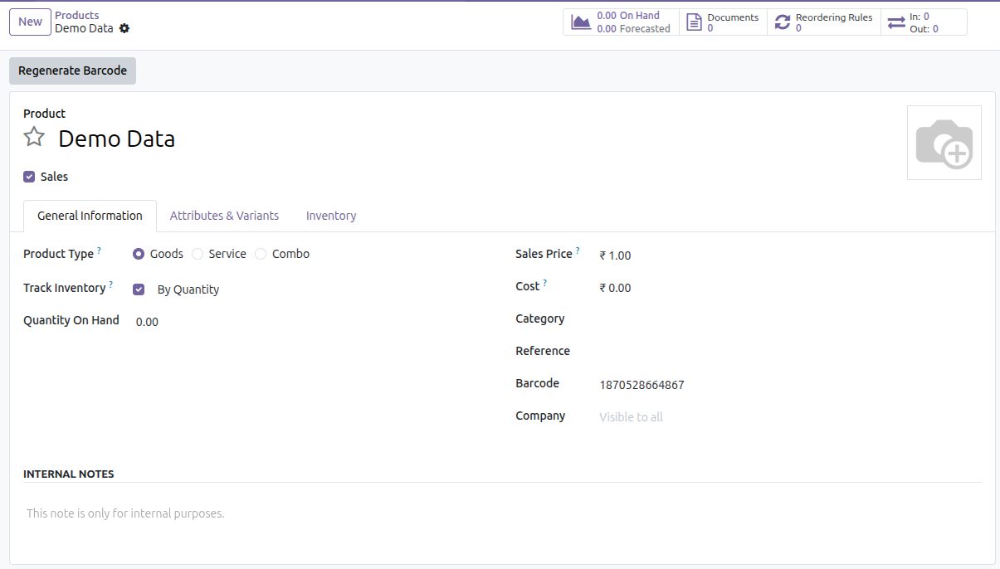

Inom Automatic EAN13 Barcode Generator is a professional Odoo 19 solution designed to automate the creation of unique EAN13 barcodes for products. The module helps businesses streamline product identification, eliminate manual barcode entry, and ensure accurate inventory and POS operations.
With this module installed, every new product automatically receives a valid and globally accepted EAN13 barcode. The system guarantees barcode uniqueness across all products, ensuring smooth barcode scanning without conflicts or duplication.
Managing barcodes manually can lead to errors, duplication, and operational delays. Inom Automatic EAN13 Barcode Generator removes these challenges by automating the entire barcode generation process, saving time and improving data accuracy.
1. Create a new product in Odoo → The module automatically generates and assigns
a unique EAN13 barcode.
2. Save the product → The barcode is stored securely and validated for uniqueness.
3. Open any product → Click on the "Regenerate Barcode" button to generate a new
barcode instantly if needed.
Below are preview images of the module interface and functionality.

For support, bug reports, or customization requests, please contact us:
Email: info@inomerp.in
We provide a one-time setup and installation service completely free of cost on any Odoo-supported server. Our experienced technical team ensures proper installation, configuration, and deployment so you can start using the module smoothly without any technical complications.
Important Note:
Free support is provided for issues caused by the standard Odoo source code
related to this module. Any issues arising due to third-party modules,
custom developments, or compatibility conflicts are outside the scope of
free support and may be chargeable.
For demos, customization, or enterprise support, connect with our team: